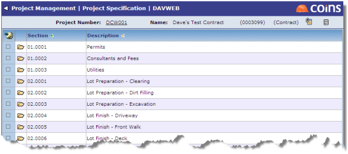
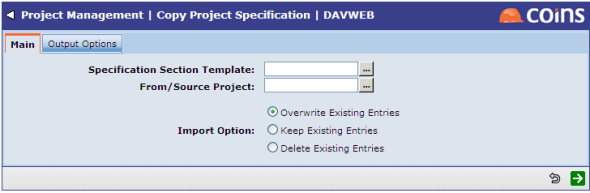

Project Specification
Project Specifications are a list of section codes and descriptions; you can relate Project Management items to sections in the Project Specification.
You can maintain the Project Specification manually, or copy one from a template, or from a specification on another project.
To create a project specification manually:
- Go to Specification Sections.

To copy a specification:
- Go to Copy Project Specification.

- Enter either the code of the template to copy, or the code of the project to copy the specification from.
- Choose what to do with the entries that already exist in the project specification.
- Click
 .
.